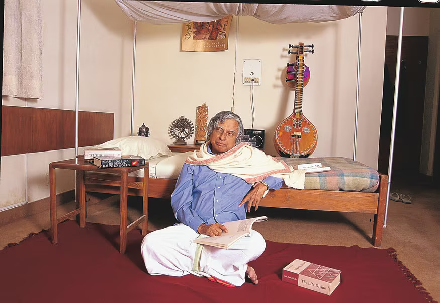
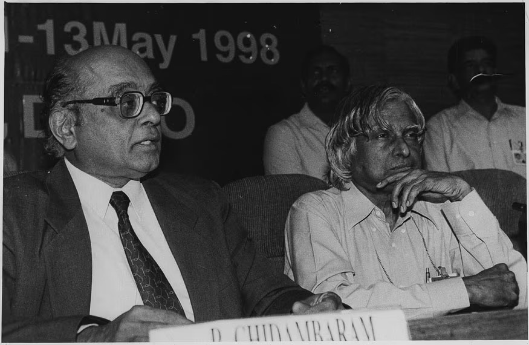
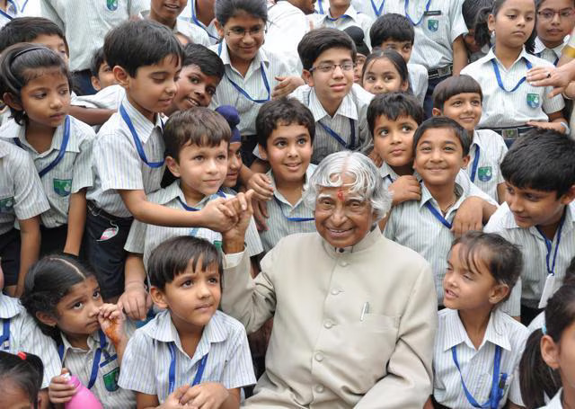

A.P.J. Abdul Kalam, the 11th President of India, was a pioneer in the country's space and missile programmes.
Kalam served as the 11th president of India, succeeding K. R. Narayanan. He won the 2002 presidential election with an electoral vote of 922,884, surpassing the 107,366 votes won by Lakshmi Sahgal. His term lasted from 25 July 2002, to 25 July 2007.
" Dr. Kalam uniquely combined the honesty of a child with the energy of a teenager and the maturity of an adult "
--PM Shri. Narendra Modi





In his school years, Kalam had average grades but was described as a bright and hardworking student who had a strong desire to learn. He spent hours on his studies, especially Mathematics.
Awards and honours
- Bharat Ratna 1999
- Padma Vibhushan 1990
- Padma Bhushan 1981
- Indira Gandhi Award for National Integration 1997
- Veer Savarkar Award 1998